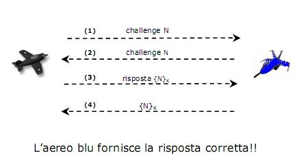

Torna alla pagina di Sicurezza & Privatezza
:: Appello d'esame di Sicurezza e Privatezza - 10/07/2008 ::
Domande
Rispondere brevemente ma in modo completo alle seguenti domande.
- Nell’ambito della classificazione presentata a lezione e relativa ai crimini informatici intenzionali, descrivere cosa si intende per ricerca (fisica e logica) fraudolenta di dati.
- Nell’ambito della tecnica di autenticazione di Single Sign On, descrivere quali sono le principali differenze tra SSO centralizzato ed SSO federato.
- Nell’ambito della tecnica di autenticazione challenge-response, descrivere l’attacco denominato reflection attack ed una possibile contromisura.
- Nell’ambito del modello a matrice di accesso, descrivere la sintassi dei comandi e fornire un esempio di comando.
- Nell’ambito delle politiche di risoluzione dei conflitti, descrivere le politiche most-specific-takes-precedence (mstp) e most-specific-along-a-path-takes-precedence (msaptp). Si richiede inoltre di fornire un esempio di gerarchia utenti-gruppi con relative autorizzazioni e che illustri che per l’utente Alice:
- l’autorizzazione vincente `e una autorizzazione positiva, nel caso in cui si applichi la politica di risoluzione mstp;
- non c’`e una autorizzazione vincente (deve rimane un conflitto +/-), nel caso in cui si applichi la politica di risoluzione msaptp.
- Si richiede di descrivere l’attacco denominato SYN flooding.
- Si richiede di descrivere cosa si intende per Certificate Revocation List (CRL), di descrivere i principali campi di cui si compone e di indicare quando queste liste devono essere controllate.
- Nell’ambito degli Intrusion Detection System, dire cosa si intende per falsi positivi e falsi negativi.
SOLUZIONE
1.
Per ricerca fraudolenta di dati si intende l'acquisizione di informazioni che si trovano in un elaboratore oppure rilasciate al termine dell'esecuzione di una elaborazione.
- Fisica: si cercano informazioni memorizzate su materiale tangibile. (es: listato)
- Logica: si cercano informazioni residue nella memoria dell'elaboratore al termine dell'esecuzione di una procedura
2.
WARNING
non trattato
3.
Il Reflection Attack è un attacco che consiste nell'aggirare il problema della challenge riproponendola all'avversario(rimandandogliela indietro), che ci fornirà la risposta corretta alla challenge che quindi rinvieremo indietro.
Slide chiarificatrice:

Contromisura: per evitare questo attacco basta inserire insieme alla challenge anche l'identificatore dell'aereo, così che l'avversario non possa rinviarla indietro uguale.
4.
I comandi hanno la seguente sintassi:
- r1,...,rm: azioni
- s1,...sm e o1,...,om: interi tra 1 e k. Se m=0 il comando non ha la parte condizionale
- c1,...cn: comandi primitivi
Esempio:
5.
La politica mstp(most specific takes precedence) comporta che vince l'autorizzazione più specifica rispetto a tutto lo schema.
La politica msaptp(most specific along a path takes precedence) invece comporta che vince l'autorizzazione più specifica rispetto ad un cammino. L'autorizzazione più specifica vince sui cammini che passano dall'autorizzazione.
Esempio:
Attach:TemiEsameSP04Dom5.jpg Δ
6.
Il SYN flooding è un attacco nel quale l'attaccante genera un flusso di pacchetti con il flag SYN attivo e con l'indirizzo IP spoofato, per non rivelare il vero indirizzo IP da cui sferra l’attacco e per rendere i pacchetti SYN indistinguibili dai legittimi pacchetti SYN.
Con questo tipo di attacco la coda delle connessioni half-opened dello stack TCP/IP viene saturata, quindi la vittima non accetterà ulteriori connessioni, anche legittime.
Slide chiarificatrice:
7.
La CRL è la lista dei certificati che sono stati revocati. Queste liste vanno controllate prima di considerare un certificato valido.
I campi della CRL sono:
- issuer(nome CA)
- last update date
- next update date
- lista numeri di serie di certificato revocati con data di revoca
- firma CA(Certification Authority)
Torna alla pagina di Sicurezza & Privatezza

{kind=link}